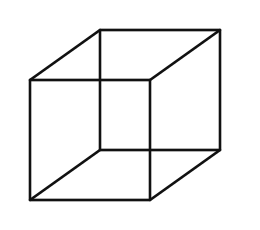

Tema 15 · El razonamiento y la argumentación
¿O te parece que el conocimiento es hermoso, capaz de gobernar al hombre, y que quien conoce lo bueno y lo malo no puede ser vencido por nada hasta obrar de otro modo que como el conocimiento manda, sino que la inteligencia basta para socorrerlo?
—Platón, Protágoras, 352c · traducción de Claude, del griego
No hablamos con rigor ni filosóficamente cuando hablamos del combate entre la pasión y la razón. La razón es, y solo debe ser, esclava de las pasiones, y no puede pretender otro oficio que el de servirlas y obedecerlas.
—David Hume, Tratado de la naturaleza humana, II, iii, 3 · traducción de Claude, del inglés
§57 · Somos máquinas de creer: las necesidades de nuestro pensamiento
Somos máquinas de creer, más que de razonar correctamente. Nuestro encéfalo está cableado para creer aquello que queremos creer y que nos resulta útil o práctico, en lugar de buscar «La Verdad®».
A nuestras creencias llegamos por medio de emociones. Una vez tenemos una creencia, la racionalizamos. Nuestro encéfalo es un encéfalo de reptil, dentro de un encéfalo de mamífero, dentro, a su vez, de un encéfalo de primate: el neocórtex. Gracias al neocórtex podemos intervenir en procesos de las partes más primitivas de nuestro encéfalo, como respirar o comer… hasta cierto punto. Pero el mero hecho de ser conscientes de los sesgos que tiene nuestra «programación mental» ya nos pone en una situación mejor para pensar correctamente que el mero darlo todo por supuesto, pensar que la realidad es tal y como la concebimos y no cuestionarnos las cosas. Que razón y emoción andan enredadas ya lo viste al tratar la personalidad (§42); aquí lo que nos importa es qué le hace eso a tu manera de pensar.
Mucha de nuestra cognición sucede inconscientemente en las partes primitivas de nuestro encéfalo. Es ahí, precisamente, donde residen nuestras emociones, que no son sino estrategias que han resultado evolutivamente adecuadas para nuestra supervivencia. Es más fácil y rápido sentir miedo y huir ante un arbusto que se mueve que esperar a averiguar si se trata tan solo de la brisa que mueve las ramas o si hay una leona escondida presta a saltar sobre nosotros.
Como quiera que nuestro encéfalo no es un ordenador, sino que es un órgano biológico que ha evolucionado gracias al azar y a la presión del medio, no es una máquina de puro razonar, sino que tiene algunas necesidades, por su propia configuración:
Control. Nos gusta pensar y sentir que tenemos control sobre nuestro entorno. O, dicho desde la perspectiva contraria, llevamos muy mal la sensación de que no controlamos nuestro entorno, que se nos escapa, que no podemos alterar nuestras circunstancias a voluntad. De ahí provienen las creencias y la superstición; son un intento de protegernos frente al peligro, de proveernos de protección ante lo incontrolado. Cuando carecemos de control comenzamos a ver patrones en los sucesos, pero eso no implica que los patrones que vemos existan, que sean reales. Evitando pasar por debajo de una escalera no estamos eludiendo el destino.
Simplicidad. También anhelamos simplicidad, porque la complejidad de la realidad nos sobrepasa, no la podemos abarcar. De ahí que tendamos a simplificar la realidad y a crear estereotipos. Son formas de reducir nuestra carga cognitiva. En principio, cada vez que hemos de razonar o tomar una decisión, no es necesario tener en cuenta todos y cada uno de los detalles de la cuestión. Es suficiente con unas variables. No necesitamos saber la temperatura ambiental ni el color de las paredes del banco para tomar una decisión sobre nuestra hipoteca. El problema reside en que no sabemos siquiera cuáles son todas las variables relevantes para nuestra decisión y podemos eliminar algunas necesarias. Otro problema surge cuando sustituimos la realidad por nuestra visión simplificada de la misma. Es decir, cuando simplificamos demasiado, cuando confundimos el mapa con el territorio1. Un médico diagnosticará una enfermedad apoyándose en los síntomas del enfermo; pero un enfermo puede tener varias enfermedades que causen esos síntomas simultáneamente. Si se conforma con la primera y más sencilla explicación, se estará perdiendo una parte importante de la realidad. Debiéramos considerar que la realidad es siempre más compleja de lo que queremos creer. Por eso es también importante escuchar diversas versiones de un suceso y no solo el testimonio de una de las partes.
Sentido. Nos gusta pensar que los acontecimientos suceden por causas o razones (importantes). Lo cierto es que, en la mayoría de las ocasiones, las cosas suceden por causas banales o son resultado de conjuntos complejos de causas que no tienen que ver con nosotros.
Autoestima y ego. Porque somos gregarios (sociales) necesitamos sentir que el resto de personas de nuestra comunidad nos respetan. Esta necesidad genera, a su vez, otros dos fenómenos:
- Sesgo de atribución. Cuando explicamos el comportamiento de otra persona, recurrimos a su forma de ser. Cuando queremos disculpar el nuestro, mencionamos causas externas, ajenas a nosotros. Somos muy buenos racionalizando nuestro comportamiento y sus motivos.
- Consistencia. Nos cuesta mucho admitir nuestros defectos y errores ante los demás. Por eso queremos mostrarnos consistentes: es decir, que perciban que hay coherencia entre lo que decimos y lo que hacemos o entre lo que prometimos y nuestros actos. Los vendedores conocen bien esta característica y por eso tratan de obtener alguna concesión por nuestra parte. Una vez que hemos admitido que algo es bueno o nos gusta, nos cuesta más negarnos a la compra.
Además de estas necesidades, nuestra forma de pensar está influida por estas otras circunstancias:
- Sentido de la esencia. Atribuimos categorías humanas —por ejemplo, morales— a algunas cosas, como si la maldad de su dueño anterior pudiera quedarse dentro del objeto. Es lo que te pasó con el jersey del principio de la unidad.
- Agencia. Es la capacidad de hacer cosas. Los humanos estamos dotados de agencia y por eso dividimos las cosas entre las que tienen y las que no tienen agencia. Por proximidad a esta idea, procesamos también de forma distinta los seres vivos que los inertes. Las cosas vivas las procesamos emocionalmente. Por eso los dibujos animados nos pueden emocionar tanto, porque los vemos dotados de agencia.
- El cambio de comportamiento. Creemos que las personas modificarán su comportamiento si les damos razones para ello. Lo cierto es que asustarlas funciona mejor. En todo caso, la mejor forma de iniciar un cambio en el comportamiento de otra persona es aludir a sus emociones por medio de la presión social o de grupo. Si queremos que alguien beba menos alcohol, poco lograremos explicándole los efectos adversos que beber tiene sobre la salud. Es mejor poner anuncios en la televisión mostrando las consecuencias de los accidentes de tráfico causados por bebedores o recurrir al «los demás no beben y conducen».
- Los niños. Ocultan su motivación peor que los adultos, porque aún no han desarrollado suficientemente su capacidad para la relación social.
- La inteligencia. Pensamos que las personas más inteligentes tomarán mejores decisiones. No es siempre así. Lo que hacen mejor las personas inteligentes es racionalizar sus decisiones; tienen más y mejores recursos para justificar sus decisiones, pero eso no implica que las decisiones que justifican sean mejores que las de los demás.
§58 · Vocabulario básico de la argumentación
A pesar de todo lo que hemos mencionado hasta ahora sobre el conocimiento humano, recurriendo tanto a la Filosofía como a la Psicología, me gustaría añadir algunos conceptos fundamentales que utilizaremos continuamente durante el curso. Son necesarios para hablar con propiedad sobre el pensamiento y el conocimiento.
- Argumentar. Consiste en construir afirmaciones que sostengan una posición o unas conclusiones. El objetivo no es ganar una discusión, como nos sucede en el día a día cuando nos ponemos a favor de una postura y la defendemos a capa y espada. Esta aproximación al pensamiento crítico tendría que valernos para desarrollar nuestros argumentos con la intención y voluntad de cambiar el pensamiento de otros, pero también el nuestro. El pensador crítico está abierto a ser convencido por mejores argumentos de los que tiene. El criterio a seguir debe ser el de sostener —o cambiarse a— la posición que tenga mejores evidencias de su parte y utilice buena lógica.
- Racionalizar vs. razonar. Razonar consiste en partir de las premisas para llegar a conclusiones. Racionalizar consiste en justificar una posición tratando de encontrarle premisas; es partir de la conclusión para buscarle unas premisas que se le acomoden, en lugar de a la inversa (que sería razonar). El modo correcto de proceder es razonando. Aun así, ve «asunción» más abajo.
- Argumentación. Conjunto de proposiciones o afirmaciones que utilizamos para sostener una conclusión (argumentos). Una explicación o un ejemplo no son una argumentación. Ni un argumento.
- Premisa. Es cada una de las afirmaciones que utilizamos para llegar a una conclusión. Como mínimo han de ser dos. Debe ser concreta y clara. Las premisas ocultas, aquellas proposiciones o afirmaciones que utilizamos sin explicitar, son muy peligrosas. En muchas ocasiones no somos capaces de llegar a un acuerdo en un intercambio de opiniones porque no nos damos cuenta de que cada cual está dando por supuestas cosas distintas. Debemos ser capaces de investigar nuestras ideas para identificar la base de premisas sobre la que razonamos sin darnos cuenta.
- Asunción. Son premisas parciales que no podemos determinar si son verdaderas o falsas. Podemos utilizarlas para crear un argumento hipotético o para llegar a una conclusión provisional. Podríamos decir: «imaginemos que x es cierto». Ahora bien, debemos ser conscientes de que ninguna conclusión es mejor que sus premisas, con lo que no podemos dar a las asunciones el mismo valor que a las premisas sólidas.
- Solidez. Es una cualidad del argumento que se da cuando las premisas son verdaderas y el razonamiento lógico es correcto.
- Juicio de valor. En muchas discusiones aparecen juicios estéticos y de valor, así como menciones a los gustos personales. Esos no se pueden resolver racionalmente. Debemos identificarlos y, si no otra cosa, al menos admitir nuestro desacuerdo. Dicho de otra forma: no podemos tratar de imponer nuestros gustos y valoraciones en una discusión racional.
§59 · Los errores del pensamiento: sesgos cognitivos y falacias
Pensamos de ciertas formas sin darnos cuenta de que lo hacemos, porque para nosotros nuestra mente funciona de forma transparente. De la misma forma que creemos que nuestros sentidos nos informan de cómo son las cosas tal y como son, creemos que nuestra razón razona las cosas de una única forma, que resulta ser la adecuada.
Pues bien, resulta que esto no es así. Como he dicho, no solo priman formas de percibir y pensar que son evolutivamente adaptativas, sino formas de pensar que ahorran recursos. Pensar es un acto muy costoso tanto en esfuerzo como en tiempo. Pocas veces disponemos del tiempo, las ganas y los conocimientos necesarios para pensar de manera óptima. Además, no todo nuestro conocimiento ni todas nuestras decisiones son igualmente importantes. ¿Qué sentido tendría considerar durante horas qué camiseta me voy a poner hoy? Sin embargo, pasamos mucho tiempo decidiendo qué grado de formación profesional o qué carrera vamos a estudiar. Y con buenas razones, pues es una decisión que tiene importantes consecuencias.
La cuestión es que estamos dotados de un sistema de pensamiento que prioriza la velocidad sobre la calidad. Dicho de otra manera: nuestro pensamiento prefiere obtener un resultado rápido y suficientemente bueno la mayor parte de las veces que un resultado más certero invirtiendo mucho tiempo para ello. Así que nuestros mecanismos de pensamiento tienen una serie de atajos a los que llamamos heurísticos2 y sesgos cognitivos. Hablaremos de estos últimos y de las falacias informales.
Los sesgos cognitivos. Son errores, pero no de la misma clase que las falacias: no vienen de razonar mal, sino de los atajos con los que nuestro encéfalo se ahorra razonar. Cada sesgo es la desviación que produce uno de esos atajos, y la produce siempre en la misma dirección: por eso se le puede poner nombre. Algunos de ellos son3:
- Sesgo retrospectivo o sesgo a posteriori: cuando ya sabes cómo acabó algo, te parece que se veía venir. Nadie acertó el resultado antes del partido y todo el mundo lo explica después.
- Sesgo de correspondencia, denominado también error de atribución: es la tendencia a explicar el comportamiento de otras personas por su forma de ser, restando importancia a la situación en que se encuentran. Es el que ya viste al hablar de la autoestima y el ego: si un compañero te contesta mal, es que es un borde; que lleve tres noches sin dormir no entra en la cuenta.
- Sesgo de confirmación: es nuestra doble tendencia a buscar, interpretar y recordar la información que confirma nuestras creencias y valores y a ignorar la que las contradice. Buscas en internet lo que ya creías y encuentras diez páginas que te dan la razón: no has comprobado nada, has ido a por ello.
- Sesgo de autoservicio: es el sesgo de correspondencia vuelto hacia dentro. El examen que apruebas es porque estudiaste; el que suspendes, porque estaba mal puesto.
- Sesgo de falso consenso: das por hecho que tu manera de ver las cosas es la corriente, y lo compruebas preguntando a quien se parece a ti. «En clase todo el mundo opina esto»: en clase, no; en tu grupo.
- Sesgo de memoria: recordar no es abrir un archivo, sino reconstruir la escena cada vez; y se reconstruye con lo que sabes hoy, que es justamente lo que alimenta el primero de la lista. Por eso dos hermanos discuten sobre una bronca de hace diez años como si hubieran estado en casas distintas.
Hay otros muchos igualmente importantes, pero los dejo para los materiales complementarios o para las actividades.
Las falacias informales. La discusión argumentativa es una de las actividades básicas del pensamiento crítico en cuanto que nos permite fijar y aumentar nuestro conocimiento. No se trata de convencer a otra persona, sino de mejorar los argumentos que utilizamos encontrando errores factuales, resolviendo problemas deductivos, identificando falacias lógicas, etc.
Podemos llegar a conclusiones por caminos distintos, y cada uno tiene sus puntos fuertes, sus limitaciones y sus formas características de error. Cuáles son y cómo se encadenan lo verás al cerrar el tema.
Por otro lado, el razonamiento nunca sucede descontextualizado: nuestras experiencias y nuestros intereses, nuestros objetivos y nuestras intenciones pueden afectar terriblemente a nuestra capacidad de razonar.
Sin entrar en cuestiones de lógica matemática, podemos armarnos con unas buenas herramientas de pensamiento crítico analizando y conociendo las más habituales falacias informales. Qué es exactamente una falacia lo verás al cerrar el tema, en las nociones de lógica formal; aquí nos basta con reconocer las que aparecen en las argumentaciones de cualquier conversación o en cualquier libro o periódico. Estas son once de las más frecuentes4.
Falacia ad hominem. En lugar de atacar lo que el otro dice, se ataca al otro. Tiene tres formas, y distinguirlas ayuda a verla venir: la abusiva le atribuye al adversario algún defecto —«no le hagas caso, que el año pasado le pillaron copiando»—; la circunstancial descarta su argumento porque le conviene sostenerlo; y el tu quoque lo descarta porque quien lo da no lo cumple, como cuando alguien te recomienda dejar de fumar y le contestas que él fuma. En las tres se cambia de asunto: que quien afirma algo sea un tramposo, un interesado o un hipócrita no toca la verdad de lo que afirma.
Falacia ad verecundiam. Es apoyarse en el prestigio de quien no es autoridad, o no lo es en esto. Aquí hay que ir con cuidado, porque no consiste en citar a quien sabe: apoyarte en un especialista reconocido en su campo es argumentar bien, y es lo que se te va a pedir durante todo el curso. Falla de dos maneras. Una, cuando el prestigio se traslada de sitio: un actor famoso recomendando un tratamiento, o un premio Nobel de física opinando sobre alimentación. Otra, cuando los expertos están divididos y te quedas solo con los que te dan la razón.
Falacia ad populum. Se apoya la conclusión en cuánta gente la sostiene. Que casi todos lo crean no lo hace verdadero: hubo un tiempo en que casi todos creían que el Sol giraba alrededor de la Tierra. En el aula suena a «pero si lo dice todo el mundo»; en un mitin, a buscar el aplauso en lugar de la prueba.
Falacia ad ignorantiam. Se da algo por verdadero porque nadie ha demostrado lo contrario: «nadie ha probado que los fantasmas no existan, así que existen». Que no haya pruebas contra una afirmación no es una prueba a su favor. Y ojo al reverso, que es la misma falacia dada la vuelta: «como no me has demostrado que sea cierto, es falso».
Falacia del hombre de paja. En vez de refutar lo que el otro sostiene, se le atribuye una versión más burda y se refuta esa. Uno dice «habría que revisar cómo usamos el móvil en clase» y el otro contesta «o sea, que quieres prohibir la tecnología en la educación». Fallan dos cosas a la vez, y hacen falta las dos para ver el truco: el primero no ha dicho eso, y aunque lo hubiera dicho, tumbar la versión burda no tumba la suya.
Falacia circular. Se da por supuesto en las premisas lo que se quería concluir, y la argumentación se muerde la cola. «—¿Por qué debo creerte? —Porque yo nunca miento. —¿Y cómo sé que no mientes? —Porque acabo de decírtelo».
Falacia del falso dilema. Se presentan como únicas dos salidas cuando hay más: «o estudias una ingeniería o te quedas sin trabajo». El truco no está en ninguna de las dos ramas, sino en las que no se nombran.
Falacia de la generalización apresurada. Se salta de unos pocos casos a la regla: «los dos suecos que conozco son unos sosos, así que los suecos son sosos». Es la inducción hecha con prisa, y se reconoce por el tamaño y la variedad de la muestra: dos conocidos no son un país.
Falacia de la falsa causa. Se toma por causa lo que solo vino antes —post hoc ergo propter hoc, «después de esto, luego a causa de esto»—. En pequeño: «me puse la camiseta de la suerte y ganamos». En grande: bajó el paro después de quitar un impuesto, luego fue el impuesto. Puede que sí, y puede que la causa fuera otra, o una tercera que explique las dos cosas a la vez.
Falacia de la pendiente resbaladiza. Se rechaza un primer paso porque, encadenando pasos pequeños, se acabaría en un final inaceptable: «si te dejo salir el viernes, luego querrás salir todos los días y acabarás suspendiendo». Casi siempre hay un eslabón de la cadena que no aguanta, y ahí es donde hay que apretar. A veces el que no aguanta es una palabra sin frontera clara, como en el montón de arena al que le quitas granos de uno en uno: nunca hay un grano que lo deje de ser, y sin embargo al final no queda montón.
Falacia del equívoco. Las diez anteriores fallan por lo que dicen; esta falla por cómo lo dicen. Una misma palabra aparece dos veces con dos significados distintos, y el argumento se sostiene solo mientras no te des cuenta: «el fin de la vida es la muerte; la felicidad es el fin de la vida; luego la muerte es la felicidad», donde «fin» significa primero término y después finalidad. En versión de todos los días: «la evolución es solo una teoría», donde «teoría» pasa de querer decir lo que quiere decir en ciencia —una explicación contrastada— a lo que quiere decir en la calle, una suposición cualquiera. Se desarma pidiendo que la palabra sospechosa se diga de otra manera: si al sustituirla por su definición el argumento se cae, el peso lo llevaba la ambigüedad. Es la primera de las seis clases que Aristóteles llamó dependientes del lenguaje, y las verás nombradas al cerrar el tema.
§60 · Nociones de lógica formal
La lógica es la parte de la filosofía que estudia la corrección de los razonamientos: no si lo que dices es verdad, sino si se sigue de lo que has dicho antes. De ahí salen sus asuntos, que son los que cierran este tema: la inferencia, la validez, la falacia, la paradoja y la noción de verdad.
De la verdad ya hablamos al abrir la unidad, así que aquí veremos los demás términos de esa definición, en un campo tan antiguo como la propia Filosofía.
La inferencia. Inferir es sacar una conclusión de unas premisas. Cuando la conclusión se sigue de ellas por pasos válidos, decimos que las premisas implican la conclusión. Lo que a la lógica le interesa de una inferencia es su estructura y no su contenido: por eso una inferencia puede ser impecable y hablar de dragones, y por eso puede fallar hablando de cosas que sabes de sobra.
Míralo en esta inferencia sobre Platón (427-347 a. e. c.). La primera premisa y la conclusión son falsas, y aun así la conclusión se deriva de las premisas: la inferencia es correcta por su estructura.
- Si Platón fue un filósofo importante, sería un gobernador importante.
- Platón fue un filósofo importante.
- Por lo tanto, Platón fue un gobernador importante.
Se distinguen tres clases de inferencia, y te conviene separarlas bien porque no prometen lo mismo. Ya te las presenté al recorrer las ramas de la filosofía (§09); aquí es donde se trabajan.
La deducción. Va de lo general a lo particular y es la única que garantiza: si las premisas son verdaderas y la forma es correcta, la conclusión es verdadera y no hay escapatoria. «Todos los alumnos de este centro están matriculados; tú eres alumno de este centro; luego estás matriculado». Su límite es el reverso exacto de su fuerza: no te enseña nada que no estuviera ya en las premisas. Es segura porque es estéril.
La inducción. Va al revés, de los casos particulares a la regla general, y por eso sí amplía lo que sabes: has visto amanecer todos los días de tu vida y concluyes que mañana amanecerá. Su límite es también el reverso de su fuerza: nunca garantiza. Ninguna cantidad de casos cierra la lista, y basta uno en contra para tumbar la regla —el cisne negro que echa abajo «todos los cisnes son blancos»—. Por eso de las inducciones se dice que son buenas o malas antes que válidas o inválidas, y por eso Hume les puso un problema que sigue abierto (§62).
La abducción. Parte de un hecho que llama la atención y conjetura la explicación que mejor daría cuenta de él: entras en casa, la puerta está forzada y falta el ordenador, y concluyes que ha entrado alguien a robar. Es la inferencia del detective, la del médico ante los síntomas y la del científico cuando propone una hipótesis. Su límite es más incómodo que el de las otras dos: solo puede escoger entre las explicaciones que se te han ocurrido, así que si la buena no está en la lista, la abducción no la encuentra. A veces se la cuenta como un caso especial de inducción.
Cómo se combinan. En la práctica no eliges una de las tres: las encadenas. El médico abduce un diagnóstico a partir de los síntomas; deduce qué tendría que aparecer en un análisis si ese diagnóstico fuera el correcto; y con los resultados de muchos pacientes induce la regla que aplicará al siguiente. La abducción propone, la deducción extrae consecuencias que se pueden comprobar y la inducción decide cuánta confianza merece lo propuesto. Ninguna se basta sola, y esa cadena es, en pequeño, la forma del método científico.
La validez. Un argumento es válido cuando la conclusión se sigue de las premisas: si estas fueran verdaderas, la conclusión tendría que serlo también. Eso no dice que las premisas sean verdaderas. Arriba tienes un argumento válido sobre Platón con la premisa y la conclusión falsas; mira ahora el caso contrario, que es el que menos se espera.
- Si Barakaldo está en Bizkaia, está en Euskadi.
- Barakaldo está en Euskadi.
- Por lo tanto, Barakaldo está en Bizkaia.
Las dos premisas son verdaderas, la conclusión también, y el argumento no vale nada: de estar en Euskadi no se sigue estar en Bizkaia, porque podría estar en Gipuzkoa o en Araba. Ha salido bien por casualidad. Compáralo con el de Platón, que tiene las mismas piezas: allí se afirmaba la primera parte del «si…, entonces…»; aquí, la segunda. Cambia solo eso y el argumento se cae. Un argumento válido con premisas verdaderas es lo que llamábamos sólido, y es lo único que garantiza la conclusión.
La falacia. Del latín fallacia, ‘engaño’: es un argumento que parece mejor de lo que es. La definición tradicional pide tres cosas a la vez —que sea un argumento, que no sea válido y que lo parezca—, y las tres se discuten5. Hay falacias clásicas que no fallan por ser inválidas: quien pone como premisa lo mismo que quiere concluir razona de forma impecable, porque de una cosa se sigue esa misma cosa, y no ha demostrado nada. Ahí el fallo no es lógico, sino de conocimiento: no puede enseñarte lo que ya había que aceptar para entrar en él.
Que un argumento sea falaz tampoco dice nada de su conclusión: puede tener premisas verdaderas y conclusión verdadera y ser falaz, porque lo que está roto es el paso de unas a otra. De hecho, dar por falsa una afirmación porque el argumento que la defendía era malo es otra falacia, la del argumento ad logicam. Un mal defensor no refuta la causa.
El estudio de las falacias empieza con Aristóteles (384-322 a. e. c.), que en sus Refutaciones sofísticas distinguió trece clases: seis que dependen del lenguaje y siete que no. Desde entonces la lista ha crecido en cientos.
Las paradojas. Del griego paradoxos, ‘contrario a la opinión común’. Una paradoja es una conclusión inaceptable que se sigue, por un razonamiento aparentemente correcto, de premisas aparentemente aceptables6. Las tres apariencias cuentan: si el razonamiento fuera malo tendrías una falacia y bastaría con señalar dónde falla; en la paradoja los pasos aguantan uno a uno y el final sigue sin poder aceptarse. Míralo en la más corta de todas: «Esta frase es falsa». Si es verdadera, es falsa, que es lo que ella dice; y si es falsa, lo que dice es cierto, así que es verdadera. No hay salida, y no porque haya truco. Y no es lo mismo que un sofisma, que es una falacia empleada a propósito para engañar: la paradoja marca un punto en el que nuestras nociones más básicas dejan de funcionar juntas.

Los mapas son una buena analogía de lo que pasa en nuestra cabeza al pensar la realidad. El mapa de Google con el que vas a tu destino no refleja toda la realidad: captura una parte mínima y la reinterpreta con símbolos. Si fuera tan complejo como el terreno, tendría que ser tan grande como él. Un mapa representa —que no reproduce— lo poco que necesitas: carreteras, curvas, distancias. Y gasolineras. Con más información dejaría de servir.↩︎
La heurística son reglas aproximativas, atajos cognitivos que utilizamos para no tener que estar haciendo una y otra vez complejos razonamientos y que sostenemos porque son suficientemente útiles la mayor parte de las veces. Es decir, que son prácticas. Para no entrar en demasiados detalles, nos fijaremos en los sesgos cognitivos.↩︎
El marco de los heurísticos y los sesgos es de Amos Tversky y Daniel Kahneman: en 1974 describieron tres atajos —representatividad, disponibilidad y anclaje— muy económicos y eficaces casi siempre, y que por eso mismo producen errores sistemáticos y previsibles. Tversky, A. y Kahneman, D. (1974). Judgment under Uncertainty: Heuristics and Biases. Science, 185(4157), 1124-1131. El desarrollo completo, para no especialistas, en Kahneman, D. (2012). Pensar rápido, pensar despacio. Debate.↩︎
Hansen, H. (2024). Fallacies. En E. N. Zalta y U. Nodelman (Eds.), The Stanford Encyclopedia of Philosophy (ed. Fall 2024). https://plato.stanford.edu/archives/fall2024/entries/fallacies/ Hansen advierte de dos cosas que conviene que sepas: que la definición de cada falacia se discute, y que los ejemplos que traen los manuales están hechos para que el error se vea, no para parecer reales.↩︎
Es la llamada definición estándar de falacia. Las objeciones a cada una de sus tres condiciones, en Hansen, obra citada más arriba.↩︎
La definición es de Sainsbury, R. M. (2009). Paradoxes (3.ª ed.). Cambridge University Press.↩︎